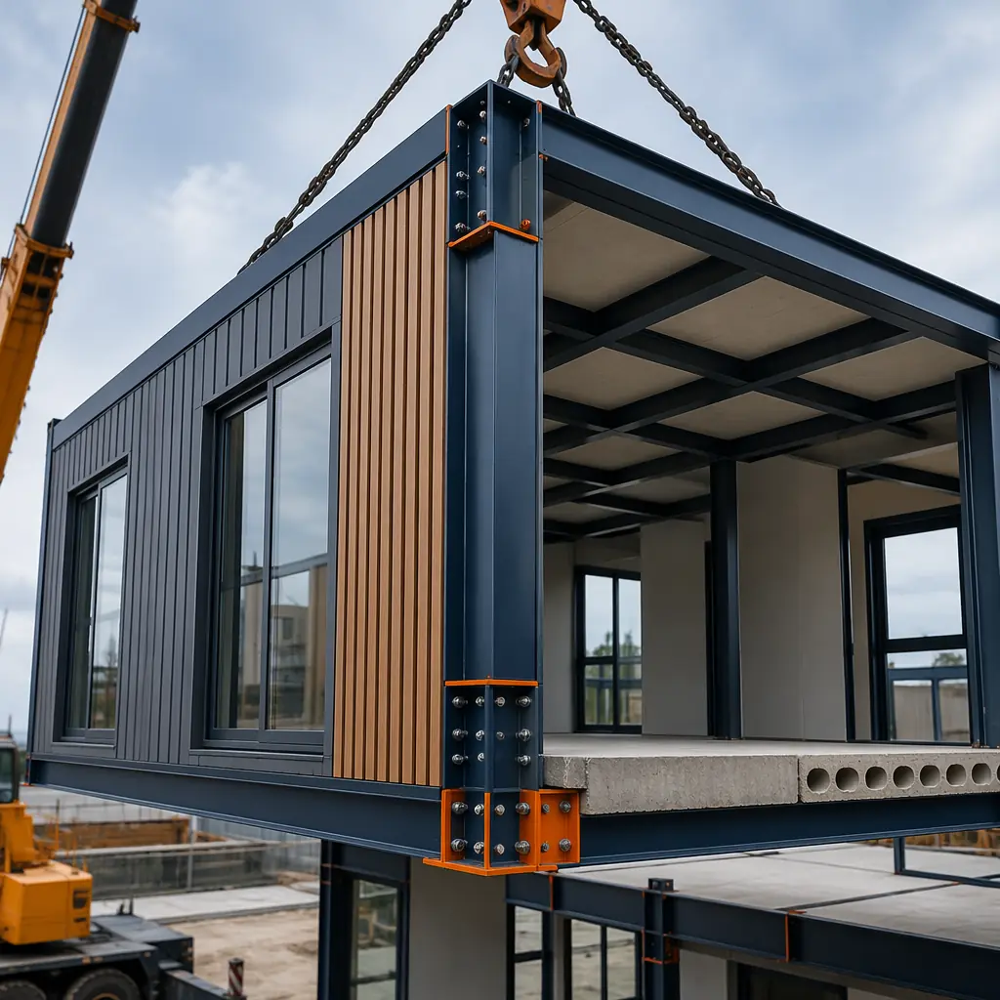
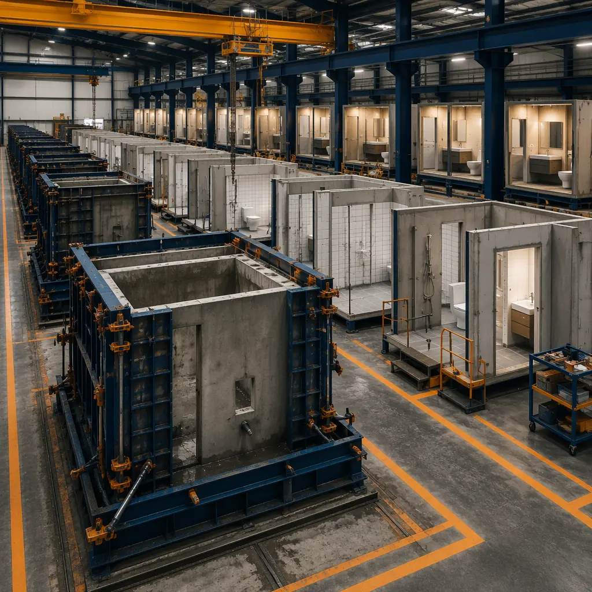
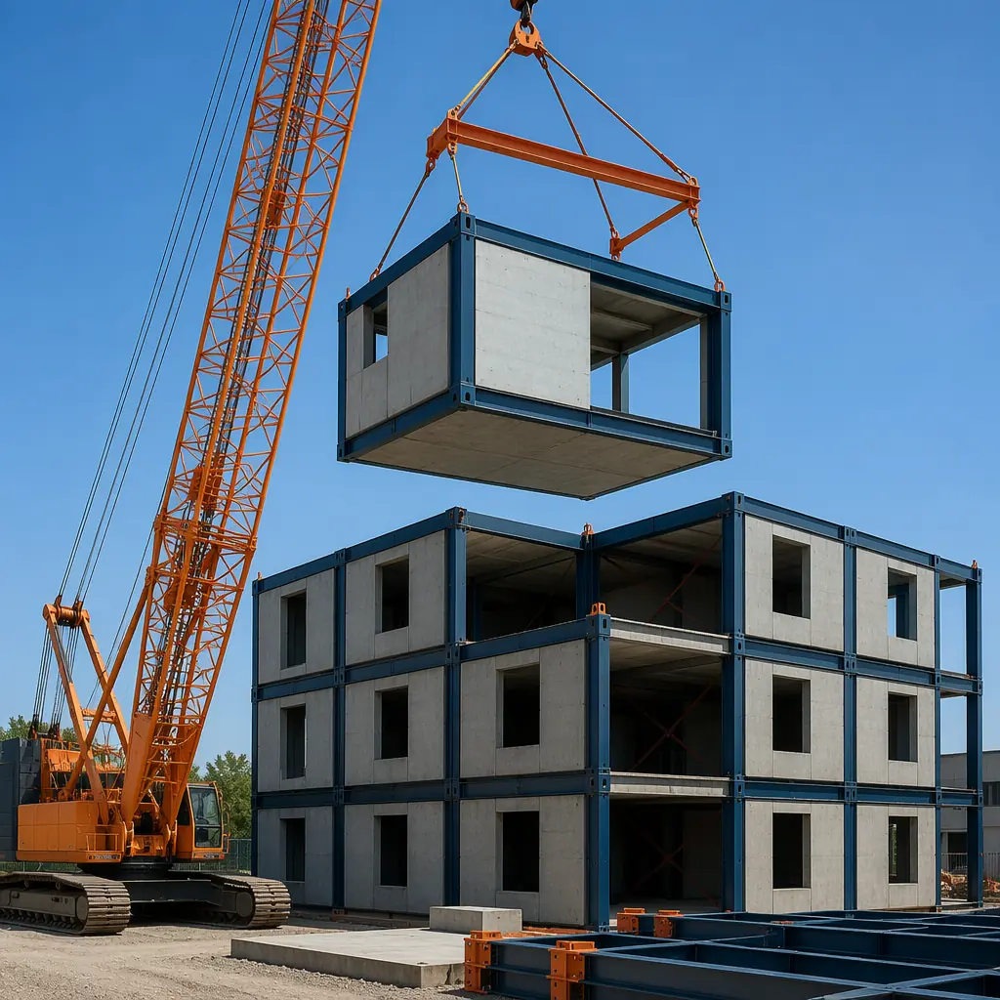
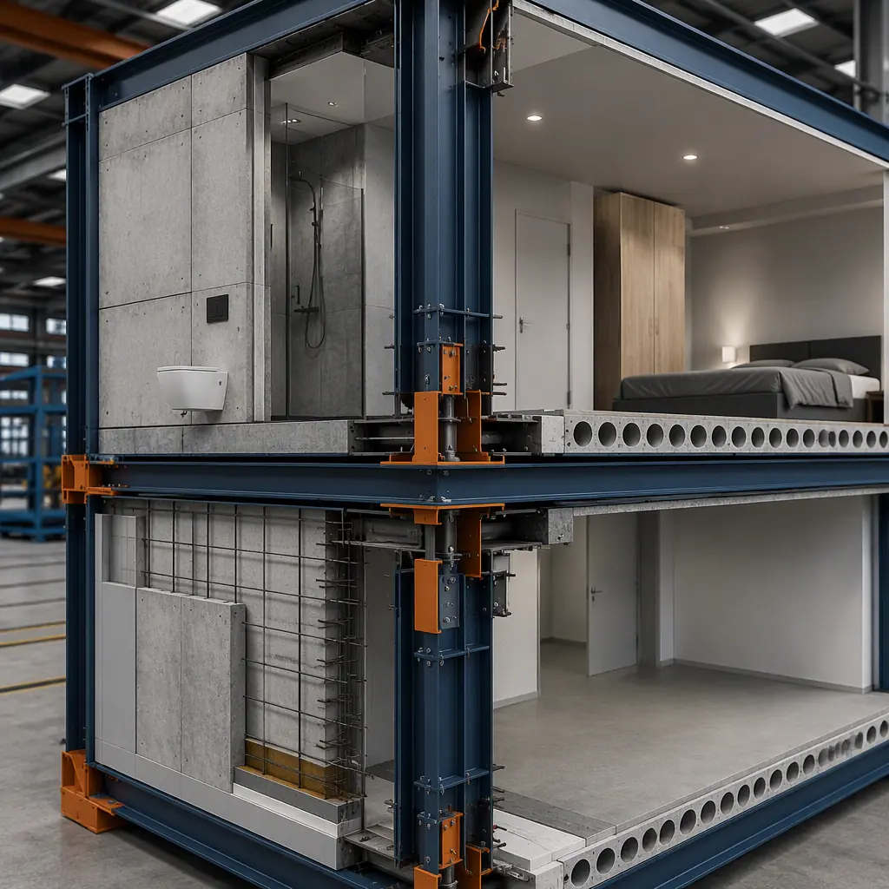

Concrete and modular construction are often discussed as competing methods — our modular vs precast comparison covers that debate in detail. But the more interesting conversation is how concrete components integrate within modular systems. Precast bathroom pods, concrete floor slabs, and hybrid steel-concrete frames are not alternatives to modular construction — they are tools that expand what modular buildings can achieve in fire resistance, acoustic performance, and structural height. Here is how each concrete-in-modular approach works, where it delivers the most value, and what to watch for in design and procurement.

Three Ways Concrete Enters Modular Construction
Developers and architects encounter concrete in modular projects through three distinct integration patterns. Each solves a different problem, has its own supply chain, and affects the overall building differently. Understanding which one applies to your project — and when to combine them — avoids both over-engineering and under-specifying.
1. Precast Concrete Pods: Factory-Built Wet Rooms
A precast concrete pod is a complete, factory-finished room — typically a bathroom, kitchen, or utility space — built as a monolithic concrete box with all MEP, tiling, and fixtures pre-installed. The pod arrives on-site as a rigid, watertight unit that slots into the modular frame, eliminating weeks of on-site wet-trade work per room.
Pod construction starts with a precision steel mold. Reinforcement is placed, conduit and plumbing sleeves are positioned, and the concrete is cast in a single pour to create floor, walls, and ceiling as one continuous element. Curing takes 12–24 hours under controlled factory conditions. After curing, the pod moves through fit-out stations where electricians wire the lighting and GFCI circuits, plumbers connect fixtures and test every joint at 2x working pressure, tilers install floor and wall finishes, and HVAC ducting is integrated. A typical bathroom pod leaves the factory at 95–98% completion — only the final service connections to the building risers remain.
Why Pods Beat Site-Built Wet Rooms
- Waterproofing integrity: A monolithic concrete pour eliminates every joint between floor and wall — the most common failure point in site-built bathrooms. Each pod is flood-tested for 24 hours before leaving the factory. Leak rate on MODURA pod projects: under 0.3% vs. 5–8% for site-built hotel bathrooms over the first five years.
- Schedule compression: Pod production runs in parallel with the modular frame, not sequentially. On a 200-key hotel, 200 bathroom pods are being cast and finished while the steel modules are being fabricated. When modules arrive on-site, pods are already complete — the installation sequence becomes place-and-connect rather than build-from-scratch. Typical saving: 8–12 weeks off wet-trade critical path.
- Acoustic isolation: A 50–60mm concrete pod wall provides STC 48–52 between adjacent bathrooms — roughly double the airborne sound isolation of a standard steel-stud-and-drywall partition. In hotels and multi-family projects, this translates to measurably fewer guest complaints about plumbing noise from neighboring rooms.
- Fire compartmentation: Concrete pods act as inherent fire cells. A 60mm unreinforced concrete wall achieves 60-minute fire resistance without additional boarding, simplifying the overall fire strategy and reducing passive fire protection costs elsewhere in the module.

2. Concrete Floor Slabs in Modular Frames
Standard modular construction uses light-gauge steel or timber floor cassettes — structurally efficient but acoustically and thermally lightweight. Inserting a concrete floor slab — typically 50–80mm thick, either precast plank or poured in place within the module frame — adds mass where it matters most: between occupancies.
The slab is typically cast into the module at the factory. For precast plank systems, the planks are lowered into the module's floor frame, grouted at the joints, and topped with a 20–30mm levelling screed. For wet-cast systems, the module frame acts as the formwork — reinforcement mesh is positioned, edge formwork is clamped to the module perimeter, and the concrete is poured and vibrated in place. Both methods achieve a composite structural action between the steel frame and concrete slab, increasing floor stiffness by 3–5x compared to a steel-only cassette.
Where Concrete Floors Deliver the Biggest ROI
| Application | Benefit | Measured Performance |
|---|---|---|
| Multi-family residential | Impact sound isolation between units | IIC 52–58 with 60mm slab + resilient layer (meets IBC multi-family requirement of IIC 50) |
| Hotels | Footfall noise reduction in corridors | FIIC 50–55 vs. FIIC 35–40 for steel-only floor (brand standards typically require FIIC 50+) |
| Office buildings | Vibration control for open-plan areas | Natural frequency >8Hz with 70mm slab (AISC DG11 walking vibration criteria) |
| Healthcare facilities | MRI/CT equipment vibration isolation | VC-A to VC-B curve compliance with 100mm reinforced slab |
| Education buildings | Classroom-to-classroom noise control | STC 55–60 (ANSI S12.60 classroom standard: STC 50 minimum) |
The cost premium for a concrete floor slab is typically $18–32 per square foot over a standard steel cassette — but this is partly offset by reduced acoustic underlayment costs, simplified fire protection detailing, and lower post-occupancy noise complaint remediation. The full project economics are covered in our cost per square foot guide which breaks down line-item trade-offs.
3. Hybrid Steel-Concrete Modular Systems
Hybrid systems combine a structural steel frame with concrete elements at the module level — more than just adding a slab. In a fully hybrid approach, the module's primary load path shifts from the light-gauge steel walls to a hot-rolled or cold-formed steel moment frame, with concrete contributing to both gravity and lateral resistance.
The most common configuration uses steel corner columns and perimeter beams with concrete infill walls or a concrete core within each module. The steel frame provides ductility and seismic energy dissipation; the concrete provides compressive strength, fire resistance, and lateral stiffness. Together they unlock building heights that pure light-gauge modular cannot reach — 12 to 25 stories without switching to a different structural system.
Hybrid Performance by the Numbers
- Building height capability: 12–25 stories with hybrid vs. 6–12 stories with standard light-gauge modular. Above 25 stories typically transitions to full concrete core with modular infill — a variant of the tower-over-podium approach discussed in our modular high-rise construction analysis.
- Lateral drift: Hybrid modules achieve H/500 to H/600 drift ratios under design wind loads, compared to H/300 to H/400 for conventional light-gauge modular. The concrete infill walls act as shear panels, reducing reliance on discrete braced bays that consume floor area.
- Column size reduction: Concrete participation in compression allows steel column sections to be reduced by 1–2 sizes compared to a steel-only frame at the same height. On a 15-story building, this can recover 40–60 square feet of net leasable area per floor.
- Fire engineering simplification: Concrete-encased steel columns achieve 120-minute fire resistance intrinsically (tested to ASTM E119 / EN 1363-1), eliminating intumescent coatings and their ongoing inspection burden. This alone can save $2–4 per square foot of gross floor area in passive fire protection.

Concrete Pods vs. Hybrid Systems: Which One Applies to Your Project?
These three approaches are not mutually exclusive — a single project might use concrete pods for all bathrooms, concrete floor slabs for acoustic separation, and a hybrid steel-concrete frame for structural height. But the starting point depends on what drives your project's economics and performance requirements.
| Decision Factor | Concrete Pods | Concrete Floor Slabs | Hybrid Steel-Concrete |
|---|---|---|---|
| Primary driver | Waterproofing, schedule, acoustic isolation in wet rooms | Acoustic performance, vibration control, fire separation | Building height, lateral stiffness, column-free spans |
| Cost premium | $3,500–$7,000 per pod (vs. site-built bathroom) | $18–$32/sq ft (floor area) | $35–$55/sq ft (gross floor area) |
| Schedule impact | Saves 8–12 weeks (parallel path) | Neutral (factory-integrated) | Adds 2–3 weeks to factory cycle per module |
| Module weight increase | +800–1,200 kg per pod | +1,500–2,500 kg per module | +3,000–5,000 kg per module |
| Best for | Hotels, hospitals, student housing, senior living | Multi-family, offices, education, healthcare | 15+ story residential, mixed-use podiums, seismic zones |
Engineering Challenges That Demand Upfront Planning
Concrete inside a modular system introduces constraints that do not exist in either pure modular or pure concrete construction. Three challenges in particular trip up projects that treat the concrete component as an afterthought.
1. Module Weight and Crane Capacity
A standard light-gauge modular hotel room weighs 10–14 tonnes. Add a concrete bathroom pod and a concrete floor slab, and the same module can exceed 22 tonnes. This pushes past the capacity of the 200–250 tonne-metre mobile cranes commonly used for mid-rise modular projects and into 350–500 t·m crawler or tower crane territory. Crane mobilisation costs jump from roughly $15,000–$25,000 to $35,000–$60,000 per project, and reach distances shrink — a module that is pickable at 30 metres with a 250 t·m crane may only be reachable at 20 metres with the heavier module. Module weight must be locked during schematic design, not value-engineered later. For constrained urban sites, our brownfield construction guide covers crane selection and logistics in detail.
2. Differential Movement Between Steel and Concrete
Steel and concrete have different coefficients of thermal expansion (steel: ~12 × 10⁶/°C; concrete: ~10 × 10⁶/°C) and respond differently to moisture and creep. In a hybrid module, the steel frame and concrete elements must accommodate this differential movement without cracking the concrete or overstressing the connections. The solution is typically a combination of: controlled pour sequence (concrete placed after the steel frame has stabilized at ambient temperature), flexible connection details (slotted holes with Belleville washers at the concrete-to-steel interface), and movement joints at module-to-module connections. Detailed envelope design considerations are covered in our building envelope systems article.
3. Foundation Load Concentration
Adding 3–5 tonnes of concrete per module concentrates vertical load at the module corner posts, which transfer through the stack to the foundation. A 10-story hybrid building can deliver 450–550 kN per corner post to the foundation — roughly 40–60% higher than a standard modular building of the same height. This often pushes foundations from strip footings or pad footings into piled solutions, particularly on sites with bearing capacities below 150 kPa. Foundation costs can increase by $40–$80 per square metre of building footprint. Our foundation systems guide compares options across soil types and building heights.

Design Flexibility: Customization Within a Concrete-Modular System
A common concern is that concrete elements lock in the design too early — that precast pods and slabs constrain architectural flexibility. In practice, the opposite is true when the concrete components are designed with a modular grid logic that allows variation within fixed interfaces.
Precast pod manufacturers maintain libraries of 20–40 standard pod configurations covering different fixture layouts (shower-over-bath vs. walk-in shower, single vs. double vanity, ADA-compliant turning radii), finishes (porcelain tile, solid surface, epoxy terrazzo), and MEP configurations (electrically heated vs. hydronic, standard vs. low-flow fixtures). Within each configuration, the architect can specify finish materials, fixture models, and accessory packages. The pod's external dimensions and service connection points remain constant, so the module frame and building risers are designed once and the pod spec is finalized later. Our design customization article explores the full range of modular personalization options.
For hybrid steel-concrete systems, the structural grid (typically 3.6m × 7.2m to 4.2m × 9.0m column spacing) establishes the module dimensions, but interior layouts are free within the module envelope. A single hybrid module type can be configured as a studio apartment, a one-bedroom with central bathroom, or an open-plan office with a kitchenette — all sharing the same structural shell and MEP riser positions.
When Concrete in Modular Construction Makes Financial Sense
Concrete adds cost to every square foot of modular construction — but in specific project profiles, it removes more cost downstream than it adds upfront. Here are the four project types where concrete integration consistently delivers positive ROI:
- Hotels above 120 keys with brand-flagged acoustic requirements: Marriott, Hilton, and IHG brand standards require FIIC 50+ and STC 50+ between guest rooms. Achieving these with steel-only modular construction typically requires resilient channels, double-layer drywall, acoustic mats, and isolation clips — adding $12–$18/sq ft in acoustic treatments. A 60mm concrete floor slab with a 6mm acoustic underlayment achieves the same ratings at $18–$25/sq ft, but eliminates the resilient channel installation labor (roughly 40% of the acoustic treatment cost) and reduces future guest noise complaints. Net premium: $6–$10/sq ft for a measurably better outcome.
- Multi-family residential above 6 stories in seismic zones: Light-gauge modular buildings in SDC D and above require substantial lateral bracing that consumes leasable floor area (typically 3–5% of gross floor area goes to braced bays and shear walls). Hybrid steel-concrete modules achieve the same lateral resistance with concrete infill walls that double as demising walls, recovering that 3–5% as revenue-generating square footage. At $3–$4/sq ft/month in prime urban markets, the recovered area pays for the concrete premium within 18–24 months of operation.
- Healthcare and laboratory facilities with vibration criteria: MRI suites, electron microscopes, and precision manufacturing equipment require VC-B to VC-D vibration curves that steel-only modular floors cannot meet without massive stiffening. A 100mm reinforced concrete slab on a steel frame achieves VC-B compliance at a module weight that remains transportable. Site-built vibration isolation for the same criteria typically requires a separate structural slab independent of the building frame — adding $80–$120/sq ft and 4–6 weeks to the critical path.
- Student housing with 30+ year hold periods: Concrete pods reduce bathroom maintenance call-outs by approximately 70% over the first 15 years compared to site-built bathrooms with fiberglass or acrylic surrounds. For a 500-bed student housing project with an institutional owner planning a 30-year hold, the net present value of reduced maintenance, fewer leak repairs, and lower insurance premiums typically exceeds the pod premium by a factor of 1.5–2.0x.
Procurement and Supply Chain: Pod Suppliers vs. On-Site Casting
The concrete component supply chain for modular construction differs from both traditional cast-in-place and standard modular procurement. Developers have two primary paths:
Integrated pod supply: The modular manufacturer either operates its own precast pod facility or partners with a dedicated pod supplier. Pods are produced in parallel with modules, delivered to the module factory, and installed into the module frame before the module ships to site. This is the dominant model in Europe (Walker Modular, Bathsystem, Elements Europe) and is growing rapidly in North America (Oldcastle SurePods, MODS PD). Lead times for pod molds are 10–14 weeks; pod production capacity for a 200-key hotel typically requires 4–6 molds running continuously for 16–20 weeks.
On-site or near-site casting: For projects where module weight or transport constraints make factory pod integration impractical, pods can be cast at a temporary precast yard near the site and craned directly into position. This preserves most of the quality and schedule benefits of factory production but adds weather dependency and requires a site-adjacent casting area of at least 500–800 square metres. It is most common on projects in remote locations or where bridge weight restrictions on the transport route limit module weight to below 18 tonnes.
At MODURA, we work with pod suppliers across three continents and can coordinate pod integration as part of a turnkey modular package — from pod design and mold fabrication through factory installation and final commissioning. Our engineering team has delivered hybrid steel-concrete modular projects up to 22 stories, including multi-family residential, student housing, and mixed-use developments across North America, Europe, and Southeast Asia.